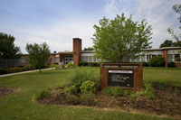
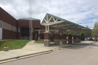
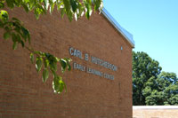
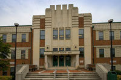
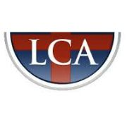

| Location | Grade | Course | Semester | Description |
|---|---|---|---|---|
|  Perrymont Elementary School, Lynchburg, VA |
Kindergarten | EDUC 476, 477: Student Teaching |
Fall 2018 | During this semester, I interned full time at Perrymont Elementary School. From the beginning, I was responsible for leading one small group during small group reading and small group math. As the semester progressed, I was given more responsiblity over the classroom. By mid October, I was in full control of the classroom, including all lesson planning, classroom managment, and instruction. Lessons planned and taught during this internship are available on the sample work page. |
|  Forest Middle School, Forest, VA |
6th Grade | EDUC 412: Middle School Practicum |
Spring 2018 | Once a week during this semester, I observed a 6th grade classroom at Forest Middle School. During this placement, I primarily observed the teacher and students, but was available to answer student questions during independent student work time. I taught one lesson which is available on the sample work page. |
|  Hutcherson Early Learning Center, Lynchburg, VA |
Pre-Kindergarten | EDUC 411: Elementary Curriculum Practicum |
Spring 2018 | Once a week during this semester, I observed a Pre-Kindergarten classroom at Hutcherson Early Learning Center. During this placement, I was responsible for leading a small group during small group time. I taught one lesson during this placement, which is available on the sample work page. |
| Beacon of Hope, Lynchburg, VA | 3rd-5th Grades | EDUC 322, 323, 324: Teaching Elementary Social Studies, Mathematics, and Science |
Fall 2017 | During this semester, I worked with the Beacon of Hope college prep program in Lynchburg. During the semester, I went to several schools in Lynchburg. While at these schools, I helped students research several options for higher education for their use in a research fair. |
|  Bass Elementary School, Lynchburg, VA |
5th Grade | EDUC 317: Teaching Reading and Language Arts Practicum |
Spring 2017 | Twice a week during this semester, I observed a 5th grade classroom at W. M. Bass Elementary School. During this placement, I primarily observed the students and teacher, but was availble during small group or independent work to answer student questions. I taught one lesson during this placement, which is available on the sample work page. |
|  Liberty Christian Academy, Lynchburg, VA |
3rd Grade | EDUC 226: Elementary Instructional Design Practicum |
Fall 2016 | Once a week during this semester, I observed a 3rd grade classroom at Liberty Christian Academy. During this placement, I was responsible for providing help to small groups where students were working independently or in small groups. I taught one lesson during this placement, which is available on the sample work page. |
| All Nations Community Church, Lynchburg, VA | 3rd - 5th Grades | EDUC 226: Elementary Instructional Design Practicum |
Fall 2016 | Once a week during this semester, I worked one on one or one on two with students to provide homework help and improve skills such as reading or math. I returned the following semester on a volunteer basis. |
| Greenbrier Elementary School, Greenville, SC | 4th Grade | EDUC 125: Introduction to Education |
Spring 2016 | Week-long, introductory pracitcum in a 4th grade, general education classroom. During this placement, I observed a classroom for a week. Each day, I attended the entire day. |